Autour d'un atome central A, les doublets d'électrons de la couche de valence (doublets liants, partagés avec un atome X, et doublets non liants E, propres à A) se repoussent mutuellement. Ils se répartissent donc dans l'espace de façon à être le plus éloignés possible les uns des autres, ce qui minimise l'énergie du système et détermine la géométrie de l'entité.

| Type | Doublets autour de A | Géométrie | Angle(s) | Exemple |
|---|---|---|---|---|
| AX₂ | 2 liants, 0 non liant | Linéaire | 180° | CO₂ |
| AX₃ | 3 liants, 0 non liant | Triangulaire (plane) | 120° | CH₂O (méthanal) |
| AX₄ | 4 liants, 0 non liant | Tétraédrique | 109,5° | CH₄ (méthane) |
| AX₃E | 3 liants, 1 non liant | Pyramidale | ≈107° | NH₃ (ammoniac) |
| AX₂E₂ | 2 liants, 2 non liants | Coudée | ≈104,5° | H₂O (eau) |
La simulation PhET « Molecule Shapes : Basics » (onglet Activités) permet de construire pas à pas ces géométries en manipulant le nombre de doublets liants et non liants autour d'un atome central.
Molécule 1 — d'après la formule chimique
Molécule 2 — d'après le modèle moléculaire
Molécule 3 — d'après la formule chimique
Molécule 4 — d'après le modèle moléculaire
Molécule 5 — d'après la formule chimique
Molécule 6 — d'après le modèle moléculaire
Molécule 7 — d'après la formule chimique
Molécule 8 — d'après le modèle moléculaire
Molécule 9 — d'après la formule chimique
Molécule 10 — d'après le modèle moléculaire
Quand on verse de l'huile dans de l'eau, les deux liquides refusent obstinément de se mélanger et forment deux phases distinctes. Cette étude de la polarité va te donner la première clé de l'explication : garde cette question en tête, tu la retrouveras — avec un rebondissement inattendu autour du savon — dans le sous-onglet ⑤ Dissolution.

L'électronégativité χ d'un atome mesure sa capacité à attirer vers lui le doublet d'électrons d'une liaison covalente qu'il forme avec un autre atome.

Plus χ est élevée, plus l'atome attire fortement les électrons de liaison (le fluor F est l'atome le plus électronégatif).
Si les deux atomes A et B d'une liaison A–B ont des électronégativités différentes (χA ≠ χB), le doublet liant est attiré plus fortement par l'atome le plus électronégatif : la liaison est dite polarisée.
- L'atome le plus électronégatif porte une charge partielle δ⁻
- L'atome le moins électronégatif porte une charge partielle δ⁺
- Si χA = χB (ou très proches), la liaison n'est pas polarisée (ex. liaison C–H, ou liaison entre deux atomes identiques comme Cl–Cl)
Choisis une liaison : observe comment le nuage électronique se déplace vers l'atome le plus électronégatif, comment naissent les charges partielles δ⁺/δ⁻, et comment apparaît le moment dipolaire.
À chaque liaison polarisée est associé un moment dipolaire de liaison, vecteur noté m, orienté de la charge δ⁺ vers la charge δ⁻, de norme d'autant plus grande que la liaison est polarisée.
Le moment dipolaire de la molécule est la somme vectorielle des moments dipolaires de chacune de ses liaisons polarisées.

CO₂ — les deux μCO s'opposent : moment résultant nul

H₂O — les deux μOH s'additionnent : moment résultant non nul
- Molécule polaire : le moment dipolaire résultant de la molécule est non nul. C'est le cas dès qu'une molécule possède des liaisons polarisées disposées de façon non symétrique (ex. H₂O, coudée).
- Molécule apolaire : soit la molécule ne possède aucune liaison polarisée (ex. Cl₂, I₂), soit sa géométrie très symétrique fait que les moments dipolaires de liaison, bien que non nuls individuellement, se compensent exactement dans la somme vectorielle.


La simulation PhET « Molecule Polarity » permet de visualiser en temps réel les charges partielles, les flèches de moment dipolaire de liaison et le moment dipolaire résultant de plusieurs molécules réelles (Activité A2). Pour aller plus loin, l'Activité A5 (« Filet d'eau ») te propose une expérience surprenante qui illustre concrètement cette différence de polarité entre liquides.
📝 Application directe — La liaison C–Cl est-elle polarisée ?
Deux entités portant des charges électriques qA et qB, séparées d'une distance r, exercent l'une sur l'autre une force électrostatique dont la norme est donnée par la loi de Coulomb :
- Charges de signes opposés → force attractive
- Charges de même signe → force répulsive
- La force diminue rapidement (en 1/r²) quand la distance augmente
Un solide ionique est constitué d'un empilement compact et régulier de cations et d'anions, en nombre tel que la neutralité électrique du solide soit assurée.
Dans le cristal de NaCl, chaque ion Na⁺ est entouré de six ions Cl⁻ les plus proches, et réciproquement chaque ion Cl⁻ est entouré de six ions Na⁺. L'ensemble est très stable : la cohésion du cristal résulte de la somme de toutes les interactions électrostatiques attractives (cation–anion) et répulsives (ions de même signe), le bilan net étant attractif.
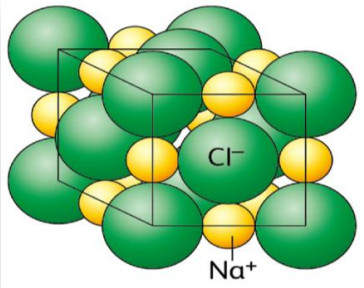
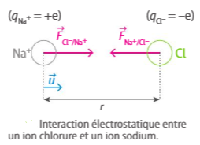
Notation vectorielle reprise dans la simulation ci-dessous
Fais varier les charges q₁, q₂ et la distance r pour observer l'intensité et le sens des forces électrostatiques, à la base de la cohésion des solides ioniques.
Rayons ioniques réels affichés à l'échelle pour cette paire.
📝 Application directe — Force électrostatique dans NaCl
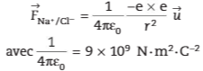
L'interaction de van der Waals est une interaction électrostatique attractive entre charges partielles +δ et −δ portées par des molécules voisines, qu'elles soient polaires ou apolaires (voir sous-onglet ② Polarité pour la notion de moment dipolaire). Deux origines sont possibles pour ces charges partielles.
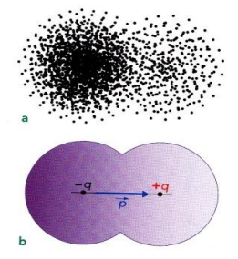
Dans une molécule apolaire (moment dipolaire moyen nul), les électrons sont en mouvement permanent autour des noyaux : à un instant donné, leur répartition n'est jamais parfaitement symétrique, et le nuage électronique peut se trouver plus proche d'un des atomes. Cela fait apparaître spontanément un dipôle instantané, qui induit à son tour un dipôle sur la molécule voisine, créant une interaction attractive de faible intensité.
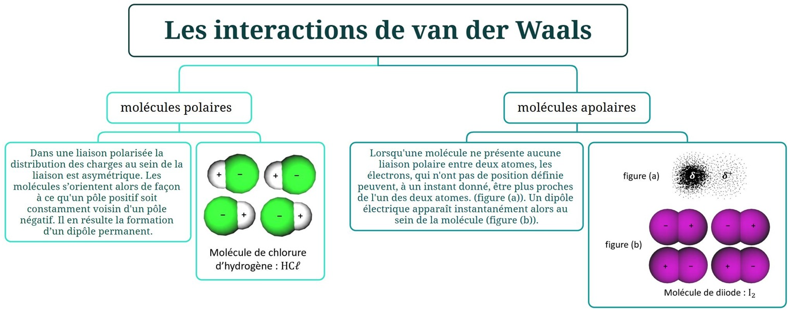
Pour des molécules polaires (comme HCl), c'est différent : la liaison étant polarisée en permanence, chaque molécule possède un dipôle permanent, de même sens et de même intensité à tout instant — contrairement au dipôle instantané, qui apparaît, disparaît et change de position sans arrêt. Les molécules voisines s'orientent alors durablement pour que le pôle δ⁺ de l'une soit voisin du pôle δ⁻ de l'autre : l'interaction de van der Waals qui en résulte est donc plus intense et plus directionnelle qu'entre molécules apolaires.
Bascule entre les deux cas pour observer la différence : un dipôle instantané apparaît et disparaît sans arrêt, à une position qui change en permanence, alors qu'un dipôle permanent reste figé, toujours dans le même sens.
Lorsque l'interaction électrostatique attractive concerne un atome d'hydrogène (lié à un atome très électronégatif comme O, N ou F) et un doublet non liant porté par un atome électronégatif d'une entité voisine, on parle de liaison hydrogène (bien qu'il ne s'agisse pas d'une véritable liaison covalente, mais d'une attraction électrostatique renforcée).
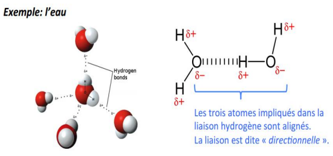
- La liaison hydrogène A···H est directionnelle : les trois atomes impliqués (A, H, et l'atome auquel H est lié) sont alignés
- Elle est environ deux fois plus longue que la liaison covalente A–H correspondante
- Son énergie (quelques dizaines de kJ/mol) est environ dix fois plus faible qu'une liaison covalente, mais plus intense qu'une interaction de van der Waals
| Interaction | Énergie typique |
|---|---|
| Van der Waals | 0,5 à 5 kJ/mol |
| Liaison hydrogène | 10 à 40 kJ/mol |
| Interaction ionique (solide) | 400 à 800 kJ/mol |
C'est pourquoi la cohésion des solides moléculaires (comme la glace, maintenue par liaisons hydrogène) est plus faible que celle des solides ioniques (comme NaCl, maintenu par interaction électrostatique directe entre ions) : il faut beaucoup moins d'énergie pour faire fondre de la glace (0 °C) que pour faire fondre du sel (801 °C) !
Lorsqu'un solide ionique comme NaCl est mis en contact avec l'eau, solvant polaire, trois phénomènes se succèdent :
- Dissociation : les interactions entre les molécules d'eau polaires et les ions sont plus fortes que les interactions électrostatiques qui maintiennent les ions dans le solide. Les cations et anions se séparent peu à peu ; le solide se dissocie.
- Solvatation (hydratation) : les molécules d'eau entourent chaque ion et interagissent avec lui : les charges partielles δ⁺ (sur H) s'orientent vers les anions, les charges partielles δ⁻ (sur O) s'orientent vers les cations.
- Dispersion : sous l'effet de l'agitation des molécules d'eau liquide, les ions solvatés se dispersent dans tout le volume du liquide.
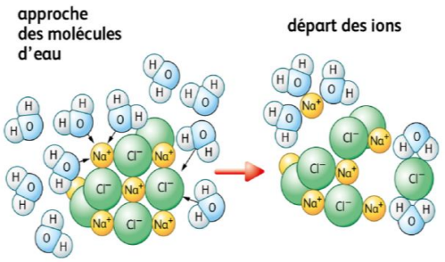
Dissociation du cristal de NaCl
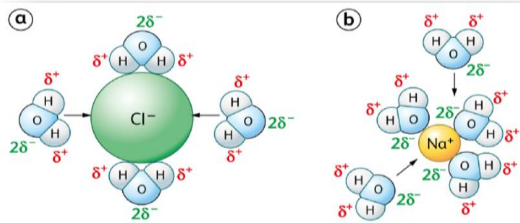
Solvatation (hydratation) des ions
La dissolution d'un solide ionique se représente par une équation de réaction : à gauche, le solide (s) ; à droite, les ions formés en solution aqueuse (aq), avec les coefficients stœchiométriques imposés par l'électroneutralité et la formule du solide.
- Un soluté polaire se dissout bien dans un solvant polaire : la dissolution s'explique par la mise en place d'interactions de van der Waals et de liaisons hydrogène entre soluté et solvant (ex. le saccharose dans l'eau).
- Un soluté apolaire se dissout bien dans un solvant apolaire (ex. le diiode dans le cyclohexane).
- Un soluté polaire est en général peu soluble dans un solvant apolaire, et réciproquement.
Une extraction consiste à prélever une espèce chimique du milieu qui la contient. Lors d'une extraction liquide-liquide, une espèce présente dans un solvant S₁ est extraite par un autre solvant S₂ (le solvant d'extraction), non miscible avec S₁.
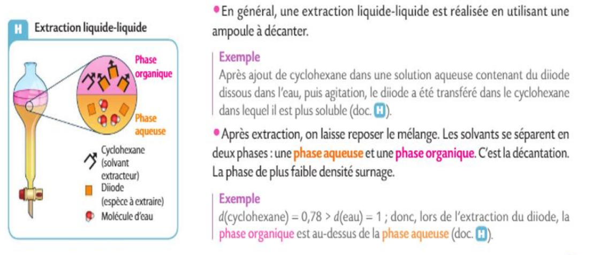
Après agitation dans une ampoule à décanter puis décantation, les deux solvants se séparent en deux phases : la phase de plus faible densité surnage.
Le solvant d'extraction S₂ est choisi tel que :
- l'espèce à extraire y est plus soluble que dans S₁ ;
- il présente un danger minimal pour la santé et l'environnement ;
- il n'est pas miscible avec S₁, pour permettre la décantation.
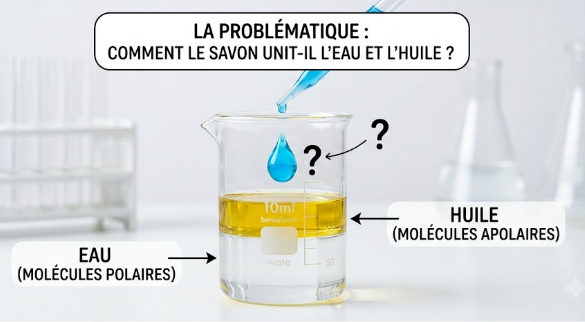
Tu sais désormais pourquoi l'eau et l'huile ne se mélangent pas. Mais alors, comment expliquer qu'une goutte de liquide vaisselle ou de savon permette de nettoyer une tache de gras à l'eau, en réunissant ces deux espèces normalement incompatibles ? La réponse tient dans la structure très particulière des molécules de savon.
Un savon est un mélange de carboxylates de sodium ou de potassium, de formule R–CO₂Na (ou R–CO₂K), où R est une longue chaîne carbonée non ramifiée.
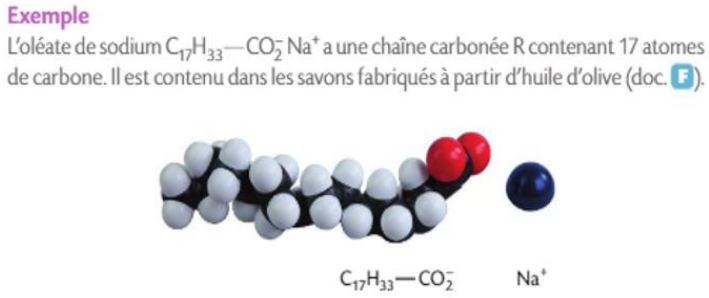
Exemple : l'oléate de sodium C₁₇H₃₃–CO₂⁻Na⁺, présent dans les savons fabriqués à partir d'huile d'olive.
Les ions carboxylate possèdent :
- une extrémité hydrophile (et lipophobe) : la tête –CO₂⁻, chargée négativement, entourée facilement de molécules d'eau polaires ;
- une extrémité lipophile (et hydrophobe) : la longue chaîne carbonée R, apolaire.
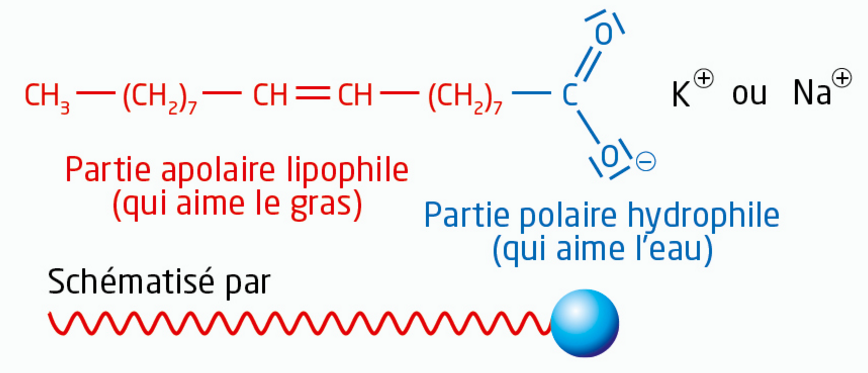
Ces espèces sont dites amphiphiles (tensioactifs) : on les schématise souvent par un trait (partie lipophile) terminé par une sphère (partie hydrophile).
En présence d'une tache d'huile à la surface de l'eau, les ions carboxylate s'organisent en monocouche à l'interface huile/eau : leur partie lipophile est tournée vers l'huile, leur partie hydrophile vers l'eau.
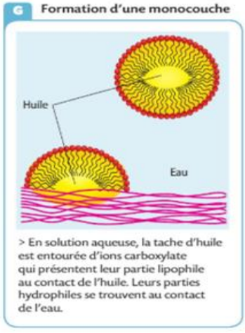
Sous l'effet de l'agitation, cette monocouche peut se refermer sur une gouttelette d'huile pour former une micelle : les chaînes lipophiles pointent vers le cœur huileux, les têtes hydrophiles restent au contact de l'eau. La gouttelette d'huile, ainsi « habillée », se disperse dans l'eau et peut être rincée.
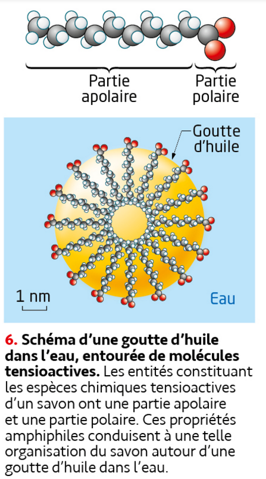
Échelle : une micelle a un diamètre de l'ordre du nanomètre.
Choisis l'onglet « Modèle » (Model) du simulateur pour cette activité.
Si la simulation ne se charge pas, cette vidéo (issue de la même animation) montre la dissolution d'un cristal ionique dans l'eau.
Un antiseptique contient du diiode I₂ dissous dans l'eau. On souhaite extraire ce diiode à l'aide de cyclohexane, utilisé comme solvant extracteur, dans une ampoule à décanter.
— S₂ doit présenter un danger minimal pour la santé et l'environnement.
— S₂ ne doit pas être miscible avec S₁, afin de permettre la décantation en deux phases distinctes.
En frottant une baguette d'ébonite avec un chiffon, celle-ci se charge légèrement : on dit qu'elle a été électrisée. Selon le matériau frotté, sa surface peut être chargée positivement ou négativement.
Lorsqu'une molécule polaire est placée à proximité d'un champ électrique, elle s'oriente en réponse à ce champ : les charges partielles opposées de la molécule (notées G⁺ et G⁻, barycentres des charges positives et négatives) subissent des forces contraires, ce qui aligne la molécule dans la direction du champ.

Au voisinage du bâton chargé, les molécules d'eau s'orientent : leur pôle opposé à la charge du bâton se rapproche de lui. Cette orientation collective des dipôles crée, à l'échelle macroscopique, une force résultante qui dévie le filet vers le bâton.
Choisis le liquide, choisis le signe de la charge de la baguette, puis clique sur « Approcher la baguette ».
💧 Liquide
⚡ Charge de la baguette
2) Déterminer sa géométrie avec la méthode VSEPR (nombre de doublets liants/non liants autour de l'atome central).
3) Comparer les électronégativités des atomes liés pour repérer les liaisons polarisées (δ⁺/δ⁻).
4) Placer le vecteur moment dipolaire de chaque liaison polarisée (orienté de δ⁺ vers δ⁻).
5) Sommer vectoriellement ces moments en tenant compte de la géométrie : somme nulle (symétrie) → molécule apolaire ; somme non nulle → molécule polaire.
Exercice 1 — Force de Coulomb dans le chlorure de potassium
Exercice 2 — Reconnaître une géométrie VSEPR
Exercice 3 — Molécule polaire ou apolaire ?
Exercice 4 — Comparer les intensités d'interaction
Exercice 1 — Interaction ion ammonium / ion phosphate
Exercice 2 — Équation de dissolution du chlorure de calcium
Exercice 3 — Associer solide et interaction responsable de sa cohésion
Exercice 1 — Pourquoi CCl₄ est-il apolaire ?

Exercice 2 — Comparer la cohésion de NaCl et de MgO
a. Calculer la norme de la force électrostatique entre ces deux ions.
b. Sachant que la force calculée précédemment pour NaCl (à r = 278 pm) valait environ 3,0×10⁻⁹ N, et que la température de fusion de MgO (2852 °C) est bien supérieure à celle de NaCl (801 °C), commente ce résultat.
Exercice 3 — Choisir un solvant pour le saccharose
🧪 Le mystère du sel disparu
Un flacon de sel s'est mystérieusement volatilisé dans une bassine d'eau au laboratoire ! Résous les trois énigmes dans l'ordre pour reconstituer le code du carnet de manip et comprendre ce qu'il s'est vraiment passé.
1Station 1 — La cohésion du cristal
Quelle expression donne correctement la norme de la force électrostatique qui assure la cohésion d'un cristal ionique, entre deux ions de charges qA et qB séparés d'une distance r ?
2Station 2 — Le pouvoir de l'eau
Le sel s'est dissous dans l'eau, mais pas dans l'huile posée à côté. La molécule d'eau, de géométrie coudée, est :
3Station 3 — Les trois étapes
Dans quel ordre se déroulent les trois étapes de la dissolution d'un solide ionique ?
🔐 Code du carnet de manip
Assemble les 3 chiffres trouvés, dans l'ordre des stations.
🎉 Mystère résolu !
Le sel n'a pas disparu : il s'est dissocié en ions Na⁺ et Cl⁻, solvatés par les molécules d'eau polaires, puis dispersés dans tout le volume du liquide. Il est toujours là — juste invisible à l'œil nu !
Géométrie et polarité
- Méthode VSEPR : les doublets liants et non liants se répartissent pour minimiser leur répulsion
- 5 géométries : linéaire (AX₂), triangulaire (AX₃), tétraédrique (AX₄), pyramidale (AX₃E), coudée (AX₂E₂)
- Liaison polarisée si χA ≠ χB ; charge δ⁻ sur l'atome le plus électronégatif
- Molécule polaire = moment dipolaire résultant non nul (géométrie asymétrique)
Cohésion des solides ioniques
- F = k×|qA|×|qB|/r² (loi de Coulomb), k = 9,0×10⁹ N·m²·C⁻²
- Empilement compact et régulier de cations et d'anions, neutralité électrique globale
- Cohésion assurée par l'ensemble des interactions électrostatiques entre ions voisins
- Les ions ne sont pas mobiles à l'état solide : pas de conduction électrique
Cohésion des solides moléculaires
- Interaction de van der Waals : entre dipôles permanents ou instantanés/induits
- Liaison hydrogène : entre H (lié à O, N ou F) et un doublet non liant voisin ; directionnelle
- Intensité : van der Waals < liaison hydrogène < interaction ionique
- Plus les interactions sont intenses, plus la température de fusion est élevée
Dissolution et extraction
- 3 étapes : dissociation → solvatation → dispersion
- Solide ionique : équation de dissolution, ex. NaCl (s) → Na⁺ (aq) + Cl⁻ (aq)
- « Qui se ressemble s'assemble » : polaire dans polaire, apolaire dans apolaire
- Extraction liquide-liquide : solvant S₂ plus dissolvant, non miscible à S₁, peu dangereux
- Savon : espèce amphiphile (tête hydrophile, chaîne lipophile), formation de micelles
- Méthode VSEPR
- Méthode (Gillespie) qui prévoit la géométrie d'une entité à partir de la répulsion mutuelle des doublets d'électrons de la couche de valence de l'atome central.
- Électronégativité (χ)
- Capacité d'un atome à attirer vers lui le doublet d'électrons d'une liaison covalente.
- Liaison polarisée
- Liaison covalente entre deux atomes d'électronégativités différentes ; l'atome le plus électronégatif porte une charge partielle δ⁻, l'autre δ⁺.
- Moment dipolaire
- Vecteur associé à une liaison polarisée (ou à une molécule), orienté de δ⁺ vers δ⁻, dont la norme traduit l'intensité de la polarisation.
- Molécule polaire
- Molécule dont le moment dipolaire résultant (somme vectorielle des moments de liaison) est non nul.
- Molécule apolaire
- Molécule sans liaison polarisée, ou dont la géométrie symétrique annule la somme vectorielle des moments dipolaires de liaison.
- Interaction de van der Waals
- Interaction électrostatique attractive entre charges partielles +δ et −δ portées par des molécules voisines (dipôles permanents ou instantanés).
- Liaison hydrogène
- Interaction électrostatique attractive, directionnelle, entre un atome d'hydrogène lié à O, N ou F et un doublet non liant d'un atome électronégatif voisin.
- Solide ionique
- Empilement compact et régulier de cations et d'anions, électriquement neutre, dont la cohésion est assurée par les interactions électrostatiques (loi de Coulomb).
- Loi de Coulomb
- Modélise la force électrostatique entre deux charges ponctuelles : F = k×|qA|×|qB|/r².
- Dissociation
- Première étape de la dissolution : séparation des cations et anions d'un solide ionique sous l'effet des interactions avec le solvant.
- Solvatation (hydratation)
- Deuxième étape de la dissolution : les molécules de solvant entourent et interagissent avec chaque ion (ou molécule de soluté).
- Dispersion
- Troisième étape de la dissolution : les entités solvatées se répartissent dans tout le volume du liquide sous l'effet de l'agitation.
- Solvant polaire / apolaire
- Un solvant polaire dissout bien les espèces polaires ou ioniques ; un solvant apolaire dissout bien les espèces apolaires.
- Miscibilité
- Aptitude de deux liquides à se mélanger de façon homogène, sans former deux phases distinctes.
- Extraction liquide-liquide
- Technique consistant à transférer une espèce chimique d'un solvant S₁ vers un solvant d'extraction S₂, non miscible à S₁, dans lequel elle est plus soluble.
- Décantation
- Séparation de deux liquides non miscibles sous l'effet de la gravité, en fonction de leur différence de densité.
- Amphiphile (tensioactif)
- Espèce possédant une partie hydrophile et une partie lipophile, comme les ions carboxylate des savons.
- Micelle
- Agrégat sphérique formé par des espèces amphiphiles en solution aqueuse, orientant leur partie lipophile vers l'intérieur (ou vers une goutte d'huile) et leur partie hydrophile vers l'eau.
🧂 Ostralo — Dissolution
Animation interactive des étapes de la dissolution d'un solide ionique.
🧭 PhET — Molecule Polarity
Explore la polarisation des liaisons et le moment dipolaire de molécules réelles.
🔷 PhET — Molecule Shapes: Basics
Construis pas à pas les géométries VSEPR en manipulant doublets liants et non liants.
Emplacement réservé aux liens Pearltrees de la séquence 09 — à compléter.